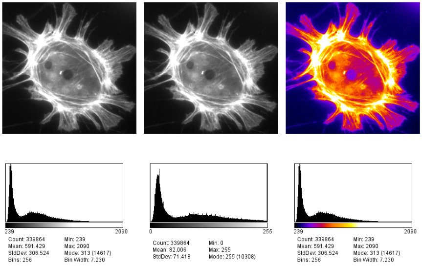

Introduction to Image Analysis
Laura Cooper
Research Fellow, CAMDU
Navigation:
- Left/right arrow keys for previous/next slide
- 'm' key to get to navigation menu
- Escape for slide overview
Links and Resources
- ImageJ Website
- Image.sc Forum
- Moodle Forum
- During the Workshops
- Other Resources:
- The Image Processing Handbook, John C. Russ, CRC Press, 5th edition, 2007
- Bioimage Data Analysis, Kota Miura et al., Wiley-VCH, 2016
- Pete Bankhead's "Analyzing Fluorescence microscopy images with ImageJ" gitbook - uncredited images come from there!
Acknowledgements
Slides adpated from presentations by:
- Dave Mason, formerly University of Liverpool: https://pcwww.liv.ac.uk/~dnmason/ia.html
- Erick Martins Ratamero, formerly University of Warwick
Image Analysis Schedule
- 15th October: Lecture, Workshop 1, Release Assignment 1
- Workshops 2 and 3
- 4th November: Assignment 1 deadline
- 5th November: Workshop 4, Release Assignment 2
- 11th November: Deadline for Peer Review of Assignment 1
- Workshops 5 and 6
- 6th December: Assignment 2 deadline
Image Analysis
- There's more data than ever
- We need it to be quantitative
- We need it to be non-subjective
- We need it to be automated
Example - Find the Root
Image courtesy of T. Roose, University of Southampton
Example - Find the Roots
Image courtesy of T. Roose, University of Southampton
Example - Find the Root
How an Image is Formed


Widefield and Confocal microscopes acquire images in different ways.


Widefield and laser-scanning microscopes acquire images in different ways.

Detectors collect photons and convert them to a voltage

The A/D converter determines the dynamic range of the data


Unless you have good reason not to, always collect data at the highest possible bit depth
32 bit is a special data type called floating point. Pixels can have non-integer values which can be useful in applications like ratiometric imaging.
Understanding Digital Images
Histograms
- Images are an array of intensity values. The intensity histogram shows the number (on the y-axis) of each intensity value (on the x-axis) and thus the distribution of intensities
- Images that look the same can contain different pixel values
- Images that look different can still contain the same pixel values
Be careful
If we stretch the histogram so that the intensity value of every pixel is effectively doubled, this increases the contrast in the image. However, the maximum intensity value in the image is now outside the bounds of the scale!


- Values falling beyond the new White point are dumped into the top bin of the histogram (i.e. 256 in an 8-bit image) and information from the image is lost
- Be warned: removing information from an image is deemed an unacceptable maniplulation and can constitute academic fraud!
- For an excellent review of permissible image manipulation see: Rossner & Yamada (2004): "What's in a picture? The temptation of image manipulation"
Stacks - Multidimensional Images
Some file formats (e.g. TIF) can store multiple images in one file which are called stacks


When more than one dimension (time, z, channel) is included, the images are still stored in a linear stack so it's critical to know the dimension order (eg, XYCZT, XYZTC etc) so you can navigate the stack correctly.
Colour in Digital Imaging
What is colour? How and when to use LUTs
Colour in your images is (almost always) dictated by arbitrary lookup tables


Lookup tables (LUTs) translate an intensity (1-256 for 8 bit) to an RGB display value
Colour in your images is (almost always) dictated by arbitrary lookup tables


Lookup tables (LUTs) translate an intensity (1-256 for 8 bit) to an RGB display value
You can use whatever colours you want (they are arbitrary after all), but the most reliable contrast is greyscale

More info on colour and sensitivity of the human eye here
Additive and Subtractive Colours can be mixed in defined ways

Non 'pure' colours cannot be combined in reliable ways (as they contain a mix of other channels)
BUT! Interpretation is highly context dependent!


~10% of the population have trouble discerning Red and Green. Consider using Green and Magenta instead which still combine to white.

Introduction to ImageJ & Fiji
A cross platform, open source, Java-based image processing program

- Open Source (free to modify)
- Extensible (plugins)
- Cross-Platform (Java-Based)
- Scriptable for Automation
- Vast Functionality
- Includes the Bioformats Library
ImageJ is a java program for image processing and analysis.
Fiji extends this via plugins.
We will use Fiji and ImageJ interchangeably